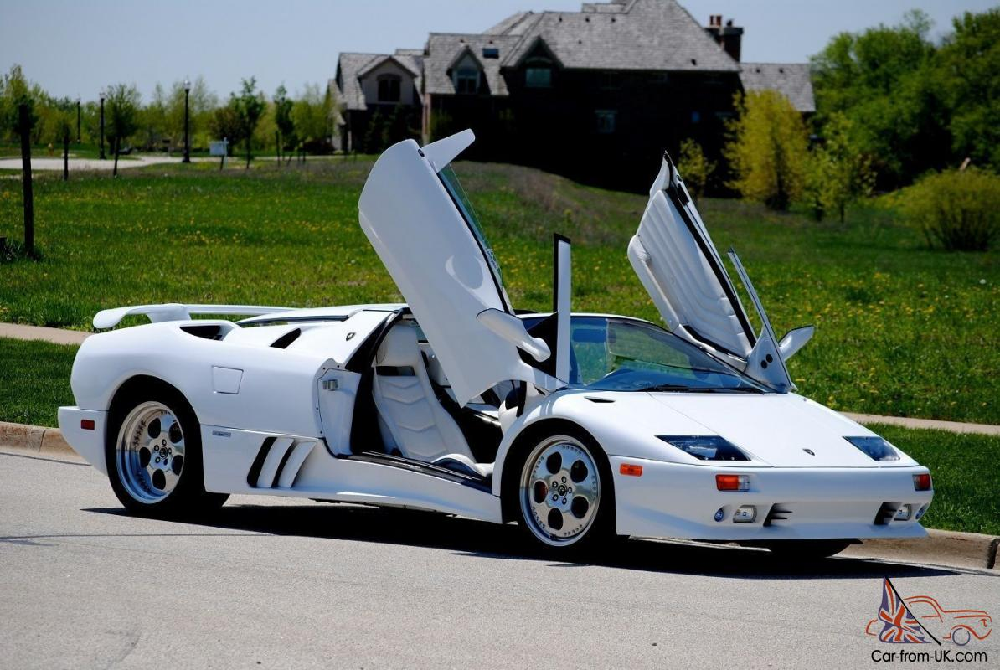
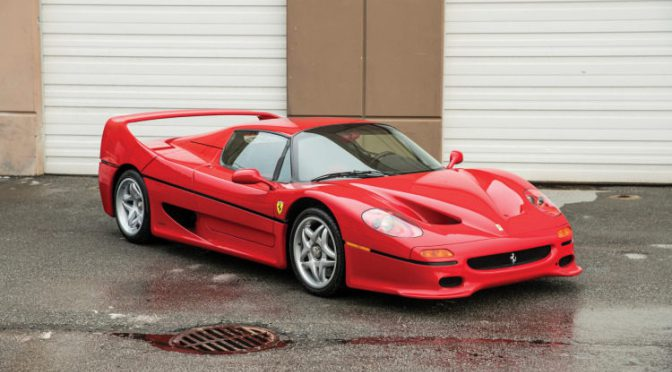
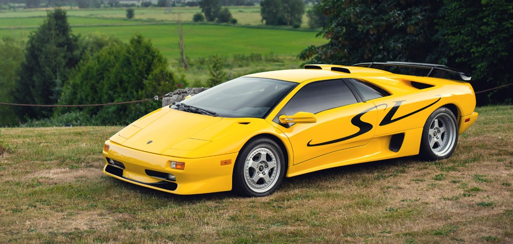
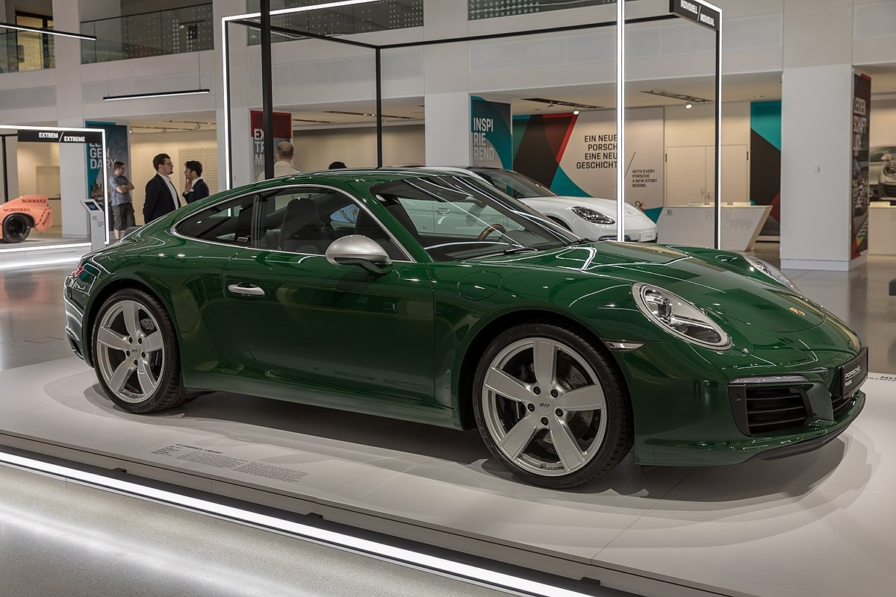
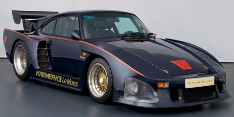
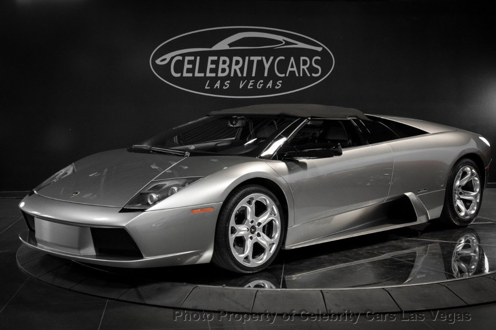

History
Lamborghini Diablo

O Diablo era um modelo esportivo da Lamborghini que foi produzido entre 1990 e 2002. O nome Diablo ("Diabo" em espanhol), como é tradição da Lamborghini, vem de um touro consagrado nas touradas, que lutou com o toureiro "El Chicorro", em 11/06/1869. Seu desenvolvimento iniciou-se em 1985, projetado para ser o sucessor do famoso Countach, mas entrou no mercado apenas no início de 1990. Assim como seu antecessor, o motor do Diablo era um V-12 5.7L (que produzia 492 hp) montado entre os eixos atrás da cabine, a tracção era traseira e o câmbio tinha 5 marchas. Com esse conjunto mecânico, o Diablo alcançava 325 km/h e demorava cerca de 4 segundos para atingir 100 km/h.
Ferrari F50

A Ferrari F50 é um supercarro de motor central-traseiro, duas portas, roadster, produzido pela marca italiana Ferrari que foi apresentado em 1995 para celebrar o quinquagésimo aniversário da companhia. O carro possui motor aspirado de 4.7L V12 com 60 válvulas (3 de admissão e 2 de exaustão por cilindro), que levava o carro à velocidade máxima de 328 km/h. Foram fabricadas apenas 349 unidades, uma a menos do que a Ferrari estimava que podia vender. Isso porque, segundo Antonio Ghini (diretor de comunicação da Ferrari), "Ferraris são carros culturais, um monumento. Eles devem ser difíceis de encontrar, então iremos produzir um carro a menos que o mercado". O último F50 foi produzido em Maranello na Itália em julho de 1997.
Lamborghini Diablo SV

A versão SV foi lançada em 1997, e era apenas um pacote de opcionais sobre o modelo básico, era desprovido dos sistemas de tração integral e suspensão eletrônica do VT e vinha de série com um aerofólio ajustável, tomadas de ar na capota, um novo para-choque dianteiro e o motor produzia 510 hp, também era possível acrescentar a inscrição SV nas laterais. O modelo 1999 abolia os faróis escamoteáveis, presentes desde o lançamento e adotou faróis de lentes lisas, essa alteração gerou controvérsias entre os consumidores. A versão SVR era uma preparação para competições do SV, com peso aliviado devido ao acabamento bem espartano, era visível algumas alterações na carroceria para melhorar a aerodinâmica e que prejudicaram o design, dentre as quais destacavam-se os faróis que pareciam entradas de ar, os spoillers laterais e dianteiros, as janelas em acrílico, o aerofólio de competição a as rodas aro 18 grafitadas. Algumas unidades foram convertidas para serem usadas como carro de passeio.
Porsche 911

O Porsche 911 é um carro desportivo produzido pela alemã Porsche AG de Stuttgart, Alemanha desde 1964. O modelo está em constante evolução desde seu lançamento em 1963 no Salão de Frankfurt, com o nome de 901. Mecanicamente ele se destaca por ter motor traseiro e até o modelo 993, em 1998, refrigeração a ar. Na realidade, apenas a versão Turbo da família 993 continuou com o motor arrefecido a ar por mais um ano, depois que, em meados de 1997, na chamada família 996, o motor de aspiração natural das demais versões foi substituído por outro com arrefecimento a líquido, mantida a arquitetura 6-cilindros boxer.
Porsche 935

Para 1978, uma terceira e última versão do 935 foi desenvolvida, a 935/78, destinada apenas a Le Mans. Devido às falhas de vedação da cabeça do biturbo de 1977, a Porsche separou-se de sua tradição de resfriamento a ar e introduziu cabeças de ilindro refrigeradas a água no motor de 1978 e equipou-as com quatro válvulas também. A capacidade foi aumentada para 3,2 L, aumentando sua produção para 750 hp, até 845. [2] O peso, que era menos importante nas retas de Le Mans, tinha que ser 1030 kg agora. Como esta faixa, como a maioria, foi executada no sentido horário, o banco do motorista foi movido para o lado direito para melhor distribuição de peso e visão nos cantos direitos, como Dunlop, Tertre Rouge e Mulsanne, outra característica distintiva do modelo de 1978.
Lamborghini Murciélago

O Murciélago é o modelo de carro desportivo que foi apresentado pela Lamborghini em 2001 como linha 2002 em substituição do famoso Lamborghini Diablo. Foram lançadas posteriormente as versões Roadster e LP640.Sua carroceria é quase toda feita de fibra de carbono, que serve para aliviar o peso (aliás, é o 1° Lamborghini a ser feito com esse material; todos os antecessores eram 100% aço), e possui rodas de 18 polegadas com pneus de perfil baixíssimo (245/35 nas dianteiras e 335/30 nas traseiras). Cada cavalo do motor carrega apenas 2,6 kg – pouco mais do que a recém-apresentada Ferrari 458 Italia, que tem 2,42 kg/cv. Italia e Murciélago celeram de 0 a 100 km/h em 3,4 segundos, conforme dados das respectivas fabricantes. Mas só o Lamborghini chega a 345 km/h (20 km/h a mais que o modelo da Ferrari).